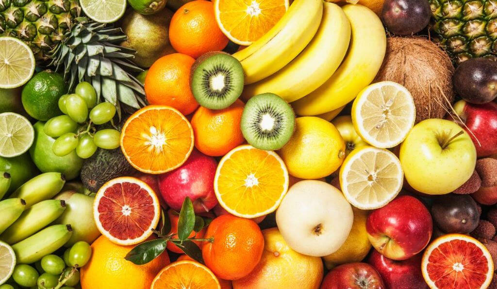
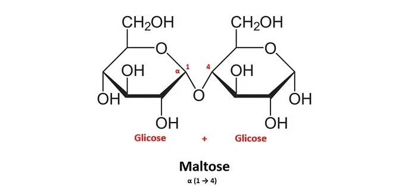
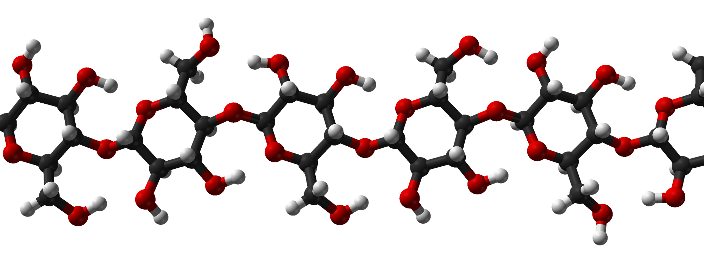

Os carboidratos são moléculas orgânicas formadas principalmente
por carbono, hidrogênio e oxigênio. Eles são uma importante
fonte de energia para os seres vivos e também podem exercer
funções estruturais em diferentes organismos.
Monossacarídeos

Os monossacarídeos são os carboidratos mais simples,
pois são formados por uma única unidade de açúcar.
Exemplos importantes são a glicose, a frutose e a galactose.
A glicose é utilizada pelas células na produção de energia.
Dissacarídeos

Os dissacarídeos são formados pela união de dois
monossacarídeos. Entre os exemplos estão a sacarose,
encontrada no açúcar de mesa, a lactose, presente no leite,
e a maltose.
Polissacarídeos

alt="Representação de polissacarídeos">
Os polissacarídeos são moléculas grandes formadas por
muitas unidades de monossacarídeos. O amido funciona como
reserva energética nas plantas, o glicogênio armazena
energia em animais e a celulose participa da estrutura
da parede celular vegetal.
Funções dos carboidratos
Função energética:fornecem energia para as atividades
celulares, principalmente por meio da glicose.
Função de reserva:armazenam energia, como ocorre com
o amido nas plantas e o glicogênio nos animais.
Função estrutural:alguns carboidratos, como a celulose,
contribuem para a formação de estruturas dos seres vivos.
Carboidratos no cotidiano
Os carboidratos estão presentes em alimentos que consumimos
diariamente, como arroz, pão, batata e massas. Eles são
importantes porque fornecem energia para o organismo.
Tipos de carboidratos
Os carboidratos simples possuem estruturas menores,
como a glicose e a frutose.
Os carboidratos complexos são formados por várias
unidades de açúcar, como o amido e a celulose.
Você sabia?
A celulose é um dos principais componentes da parede celular
das plantas. Embora os seres humanos não consigam digeri-la,
ela faz parte das fibras alimentares e contribui para o bom
funcionamento do intestino.